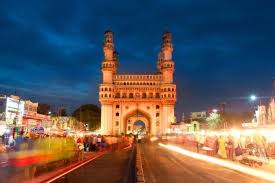
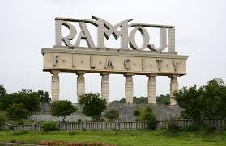
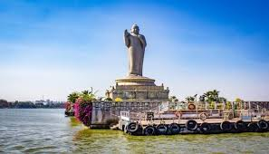
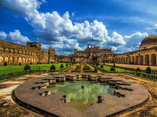
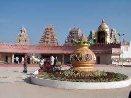

Places to travel in Hyderabad
PORTFOLIO


Ramoji Film City

Buddha Statue

Surendrapuri

About Hyderabad
is the capital and largest city of the Indian state of Telangana and the de jure capital of Andhra Pradesh.[A] It occupies 625 square kilometres (241 sq mi) on the Deccan Plateau along the banks of the Musi River, in the northern part of South India. With an average altitude of 542 metres (1,778 ft), much of Hyderabad is situated on hilly terrain around artificial lakes, including the Hussain Sagar lake, predating the city's founding, in the north of the city centre. According to the 2011 Census of India, Hyderabad is the fourth-most populous city in India with a population of 6.9 million residents within the city limits, and has a population of 9.7 million residents in the metropolitan region, making it the sixth-most populous metropolitan area in India. With an output of US$74 billion, Hyderabad has the fifth-largest urban economy in India. Muhammad Quli Qutb Shah established Hyderabad in 1591 to extend the capital beyond the fortified Golconda. In 1687, the city was annexed by the Mughals. In 1724, Mughal governor Nizam Asaf Jah I declared his sovereignty and founded the Asaf Jahi dynasty, also known as the Nizams. Hyderabad served as the imperial capital of the Asaf Jahis from 1769 to 1948. As capital of the princely state of Hyderabad, the city housed the British Residency and cantonment until Indian independence in 1947. Hyderabad was integrated into the Indian Union in 1948 and continued as a capital of Hyderabad State (1948–56). After the introduction of the States Reorganisation Act of 1956, Hyderabad was made the capital of the newly formed Andhra Pradesh. In 2014, Andhra Pradesh was bifurcated to form Telangana and Hyderabad became the joint capital of the two states with a transitional arrangement scheduled to end in 2024. Since 1956, the city has housed the winter office of the President of India.